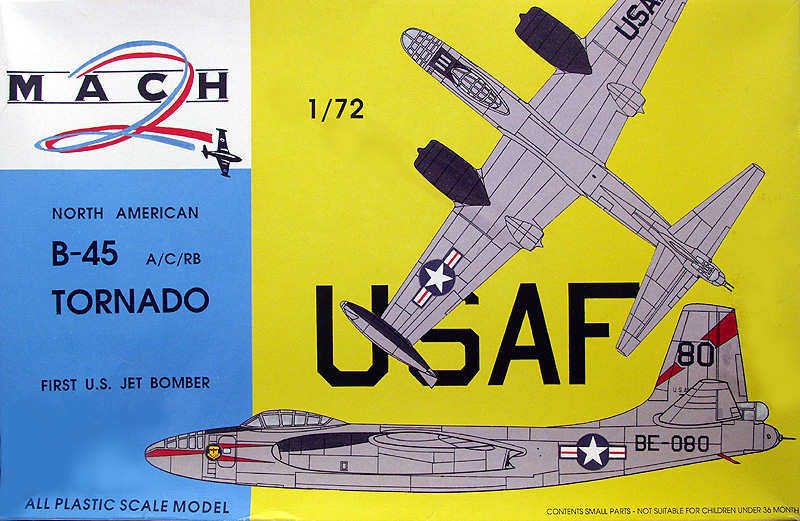
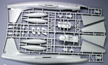
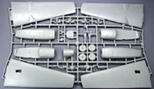
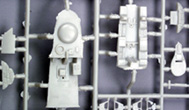
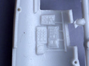
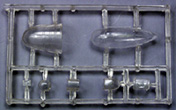
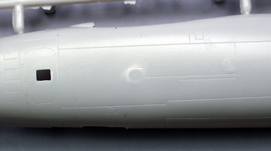
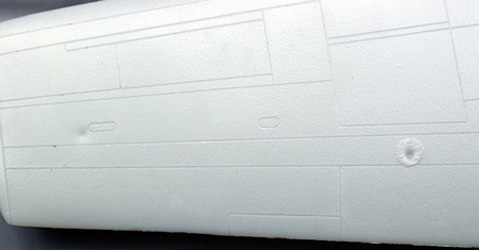
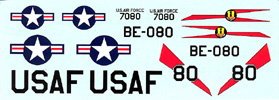

{kind=link}
{kind=link}
{kind=link}
{kind=link}
{kind=link}
{kind=link}


1/72 Mach 2 B-45 Tornado

Kit #0008
MSRP $74.98
Images and text Copyright � 2007 by Gary Buchanan
History
The B-45 Tornado holds a number of firsts. It was the first American four engined jet to fly, it was the first operational jet bomber to be used by the US Air Force, the first jet aircraft to be refueled in the air and it was the first jet bomber to drop a nuclear weapon. The B-45 was designed as a result of a War Department request in 1944 for a family of jet powered bombers which came about as a result of the War Department's concern about the advances in German jet technology. In September of 1944 a developmental contract was given to North American for three aircraft designated the XB-45. Three other contractors were given similar contracts, Convair for the XB-46, Boeing for the XB-47 and Martin for the XB-48. As a result of the increasing tensions with the Soviet Union in 1946, the Air Force decided to forgo the competition that would normally be held between the four entries and opted to review the designs to determine which one could be produced first. By mid 1946 the XB-45 and XB-46 were nearing completion but the XB-47 and XB-48 were still at least two years away. The Air Force concluded that the XB-46 would likely be inferior in performance and that its thin fuselage would not be able to hold all of the required radar equipment. As a result a contract was signed to produce 96 B-45A's in January of 1947. The first XB-45 made its maiden flight in March of 1947. The three XB-45's produced flew a total of 131 test flights with the loss of one aircraft killing the crew of two. The other two were eventually turned over to the Air Force.
The B-45A, the first production B-45 flew in February of 1948 and differed for the XB-45 in having improved ejection seats and communications equipment, an E-4 autopilot and a bombing navigation radar. The first batch of 22 was powered by J35 turbojets and was not considered combat ready and was assigned to training duties. The next batch was equipped with J47 turbojets. The first B-45A's entered service in November of 1948 with the 47 Bombardment Group. The initial order of 96 planes was completed in March of 1950. At the outbreak of the Korean War it was decided to convert the B-45A to a tactical nuclear bomber. The B-45 could not carry the early nuclear weapons due to their large size and even with the development of smaller bombs, the aircraft required extensive modifications. Fifty-five nuclear capable B-45's arrived in the United Kingdom in 1952. These were equipped with a 1200-gallon fuel tank in the aft bomb bay and despite technical problems was SAC's first line deterrent in Europe.
The B-45B was a proposed variant of the A model with improved radar and fire control systems. None were built. The B-45C was the first jet aircraft capable of aerial refueling. It carried two 1200 gallon wingtip fuel tanks, had a strengthened canopy and an in flight refueling receptacle. The first B-45C was flown in May of 1949. Only ten were built and the remaining 33 under construction were converted to RB-45C's. On the RB-45C the bombardiers canopy was faired over and replaced with an oblique camera system. The RB-45C first flew in April of 1950 with the last one being delivered in October of 1951. RB-45C's flew with SAC during the Korean War, as B-29's could no longer fly these missions safely. They flew many missions until early in 1952, when they were converted to night operations. Their service ended shortly there after. RB-45C's also flew several long-range missions over the Soviet Union during the middle 50's. On July 29, 1952, an RB-45C made the first non-stop Trans-Pacific flight, having been refueled twice by KB-29's along the way. By 1959 the RB-45C had been replaced by the RB-47E.
The Kit
The Mach 2 B-45 kit is one of Mach 2's earlier kits dating to 1993. The box has a corrugated bottom pan and a thin cardboard top. The kit is molded in light gray plastic with recessed panel lines. Though larger than I like they are typical of other kits in this range and on this kit are reasonably uniform. Typical of most Mach two kits the surface somewhat rough and is marred with trash globs, sinkholes and deformations caused by the ejector pin stubs inside the fuselage and wings. Also typical are the heavily flashed small parts. The kit can be used to build the A, C, or RB version although the decals provided are only for an A version. All of the parts except clear parts are supplied on two large sprues. There is no engine detail, the intakes have cones and the exhaust end has pipes but the way the pods are designed you can't see straight through, wouldn't be much to see anyway. Let's take a look at what's in the box.
The interior parts are a bit more extensive than some of the Mach 2 kits and include floors for two levels, bulkheads, consoles and seats for the three man crew, multiple instrument panels and even some black boxes molded into the fuselage side walls.





You may click on the small images above to view larger pictures
Most of this detail is soft but should paint up OK. Grand total of gray parts is 65. The clear parts are marginally better than most Mach 2 kits but that is not saying much. Total number of clear parts is 7.
Shown below are a couple of examples of the type of surface defects common to all Mach 2 models, both sinkholes and deformations from internal ejector pin stubs. It's almost as if they don't use enough mold release and the part sticks in the mold and when the ejectors try to push the part out of the mold, it deforms the surface. The first photo shows a deformation on the fuselage most likely caused by too much pressure applied to the ejector pin on the opposite side. The second shows both a sinkhole and a trash glob on the surface of the wing.
 

The decals, as mention above, are for one aircraft from the 47 Bomb Wing. The squadron patch is somewhat simplified but probably close enough in this scale. The decals appear thin and well registered but I have no experience with so can't comment on them. The instruction sheet is one side of an A4 size page and is just about as basic as you can get. It does identify the parts differences between the A and C and the RB version however it would be wise to study photo's if you plan on doing a specific version.
Conclusions
Most people have a love / hate relation with Mach 2 kits. They love the subjects and hate building the kits. What with the fit issues, surface issues, flash, no alignment pins and so on I can only recommend these kits to modelers with a lot of limited run kit experience.